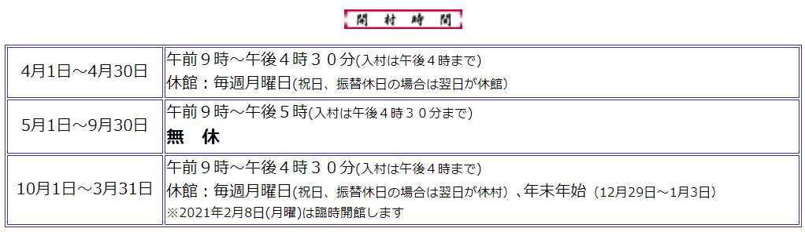
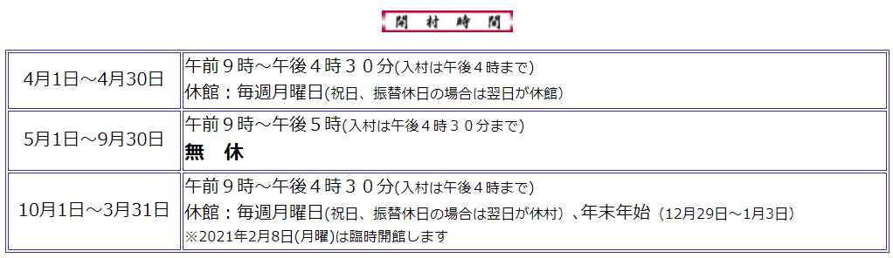

住所：北海道札幌市厚別区厚別町５０−１
お問い合わせ：011-898-2692
営業時間：
アクセス：
JRをご利用の方～札幌駅から15分→野幌駅で＜JRバス乗り換え＞11分→セラミックアートセンター前下車
バス路線バス路線は次の2系統がご利用できます。（どちらも野幌駅経由です。）
運行時刻についてはＪＲ北海道バス厚別営業所(011－891－2544)かＪＲ野幌駅（011－382－2478）へお尋ねください。
公式HP： 北海道開拓の村
北海道開拓の村
住所：北海道札幌市厚別区厚別町５０−１
お問い合わせ：011-898-2692
営業時間：
アクセス：
JRをご利用の方～札幌駅から15分→野幌駅で＜JRバス乗り換え＞11分→セラミックアートセンター前下車
バス路線バス路線は次の2系統がご利用できます。（どちらも野幌駅経由です。）
運行時刻についてはＪＲ北海道バス厚別営業所(011－891－2544)かＪＲ野幌駅（011－382－2478）へお尋ねください。
公式HP：北海道開拓の村
北海道開拓の村（ほっかいどうかいたくのむら、英称：Historical village of Hokkaido）は、北海道札幌市厚別区厚別町小野幌（野幌森林公園内）にある野外博物館。2007年（平成19年）8月に「博物館相当施設」に指定された[2]。一般財団法人北海道歴史文化財団が指定管理者として管理運営を行っている。
{% endblock %}